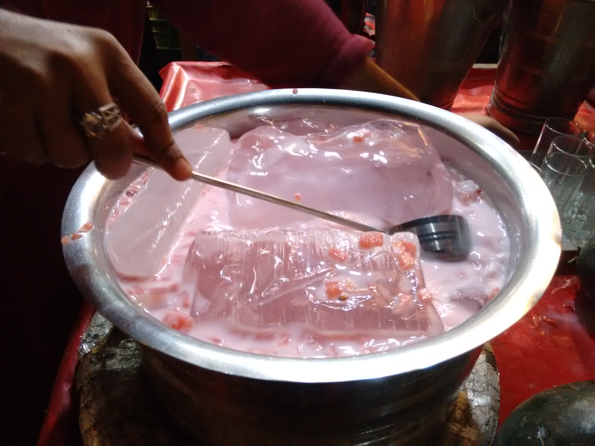

A Rooh Afza milkshake (often called Doodh ka Sharbat) is a popular South Asian cooling drink made by blending chilled whole milk with Rooh Afza—a concentrated, ruby-red herbal syrup infused with fruits, floral extracts (such as rose and screwpine), and herbs. Known for its distinct floral aroma and deep pink hue, this milkshake offers a rich, soothing flavor profile that balances the sweet, perfumed notes of the syrup with the creamy texture of cold milk. It is widely enjoyed across India and Pakistan as a refreshing summer treat and a staple drink during Ramadan.